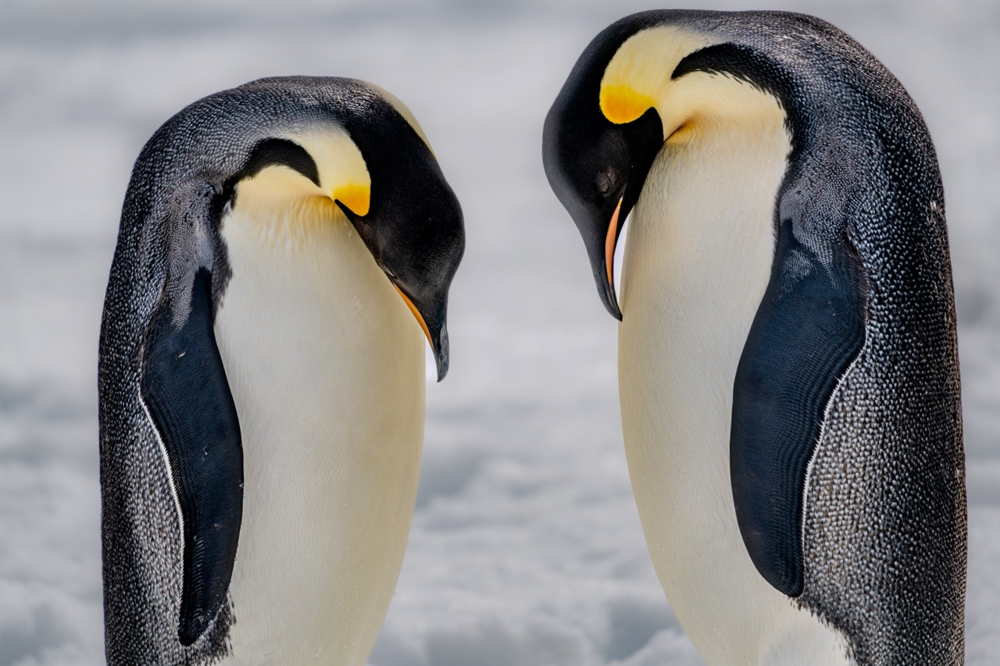

Click a thumbnail below to swap the photo (resets position). Drag and scroll-wheel to pan/zoom in the frame. Sliders for fine control. Edit caption text directly. When it lands, hit Copy CSS and paste back.

Drag with mouse to pan, scroll wheel over frame to zoom. Or use sliders.
Eyebrow is the small uppercase line. Lede is the italic line below. Use <br> for a line break in the lede.